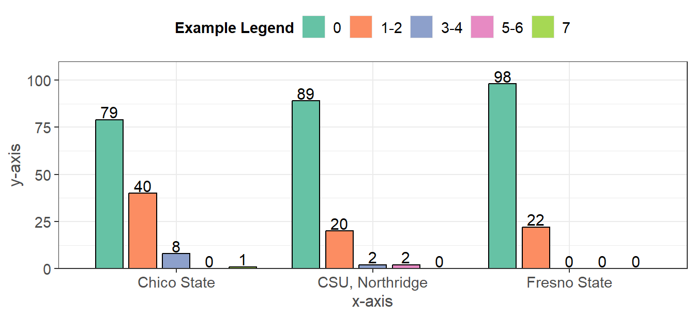

Graph Interpretation
- Most questions fall under one of the following types of figure styles, some of which may be new to you. Below are some helpful notes on how to interpret these graphs.
Histogram with Boxplot
 Figure 1.1: Figure Caption
- Above is a graph type used for plotting numeric questions, a histogram with a boxplot and scatter points.
- Histogram: the bottom part of the graph, these bars show the occurrence (y-axis) of our variable of interest (x-axis). The higher the bar, the more frequently the x-axis value occurs. The dotted line represents the mean value (the average across the responses).
- Boxplot: the blue box with the lines at the top, the box itself represents the middle 50% of the data (25% to 75%). The dark black line within the box represents the median value (where 50% of the data falls below).
- Scatter: these are the dots that overlay the boxplot. They are used to help show the distribution of the data along with the histogram (number of dots represents number of responses for a given value).
- Figure Caption: below each graph, a figure number and caption are placed in order to help keep track of the current page and the figure title.
Density Plots
Figure 1.2: Figure Caption
- Similar to the histogram above, the density plot shows the distribution for a numeric variable of interest on the x-axis and the “density” of the data on the y-axis (this is how often the value occurs in the data).
- The smooth curve helps show the distribution of the data (as a continuous variable).
Barplots
Figure 1.3: Figure Caption
- Barplots were used to graph questions which had nominal or ordinal responses (labeled data that’s separated into different groups). The x-axis is the response option, and the y-axis is the frequency in which they occured.
- The numbers above the bars represent the total respondents in the given group, as well as the percent of the data that they comprise.
- Note: for campus breakdowns, these numbers were left out for simplicity reasons. Numbers are only shown in the summary paragraphs below the graphs.
Tables
| Questions | Responses |
|---|---|
| Question 1 (n = #) | Response # (%) |
| Question 2 (n = #) | Response # (%) |
| Question 3 (n = #) | Response # (%) |
Table 1.1: Table Caption
- Tables were used to group together sets of questions that typically had a Yes/No response pattern.
- The left column represents the questions along with the numbers of students who responded to the question.
- The right column represents the number of student who responded a certain way, along with the percent that responded this way (out of all the students in total that responded).
Funding
Partially funded by USDA SNAP, known in California as CalFresh, an equal opportunity provider and employer, and the California Department of Social Services. Any use of these results in further work must use the following citation:Center for Healthy Communities, "Basic Needs Survey", June 2021. Retrieved on xx-xxx-xxxx from https://chicocalfresh.github.io/bns-pilot2-website/index.html